GOLD RUSH · Practical 2 · Medium
The Maze
A maze of tall walls in the 32 × 32 m yard. The way to the exit snakes from west to east and back. Two Slimes patrol the corridors and a fast Ghost waits near the gate. A SPEED power-up at the start helps you through the first long corridor. You learn to build with walls, to make passages wide enough, and to set a par time.
1Goal and values
Goal
Turn the Level1 yard into a maze with 8 coins, 2 Slimes, 1 Ghost and a SPEED power-up. Every corridor is at least 3 m wide. Two dead ends hold a reward coin.
You learn: walls as maze pieces, rotation 90, passage width, sight lines (walls hide you), PowerUpSpot, par time.
What you need: Practical 1 (or the overview) and your project with the Phase 10 package. You start from its Level1.
The LevelDef values (you type them in step 11):
| Field | Value |
|---|---|
title | "The Maze" |
subtitle | "Find the way out" |
scene | "Level6" |
size | 32 (32 × 32 m, Arena Half 16) |
coins | 8 |
| monsters | patrollers = 2 (Slimes) · chasers = 1 (Ghosts) |
powerUps | 1 |
enemySpeed | 1f |
parTime | 60 seconds (tune it in the play test) |
lives | 2 (the default, you can leave it out) |
2The map
This is your level from above. North (+Z) is up. One grid square is 2 m, like the floor tiles. The numbers on the coins are the CoinSpot numbers.
Follow the path with your finger: start → west gap in row A (X −16…−12) → east along the 2nd corridor, through the 3 m passage at the splitter → east gap in row B (X 12…16) → west along the 3rd corridor → gap in row C (X −8…−4) → gate. Coins 2 and 6 sit in dead ends.
3Make the scene
- Open
Scenes/Level1. File → Save As… →Assets/GoldRush/Scenes→ nameLevel6→ Save. - Check the title bar: it says Level6.
- Rename the root
Level 1 - Training YardtoLevel 6 - The Maze. - In its Level Scene component, set Arena Half =
16. - Save.
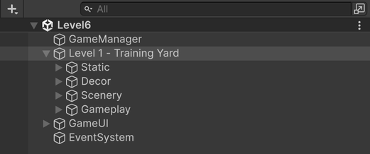
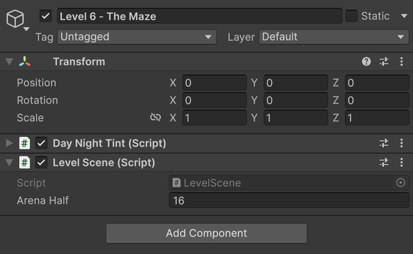
Level 6 - The Maze, Arena Half = 16 (the same as Level1).4Clear out
- Delete all 12 children of
Static/Obstacles. Keep the group (two blocks go back in later). - Delete
Static/Structures/LCover(the L-shaped cover). - Delete
Gameplay/PowerUps/PowerUp Magnet. - Keep both Slimes and the 6 CoinSpots: you move them.
The outer walls (Static/Walls/PerimeterWall), the gate, the floor and Decor stay exactly as in Level1.
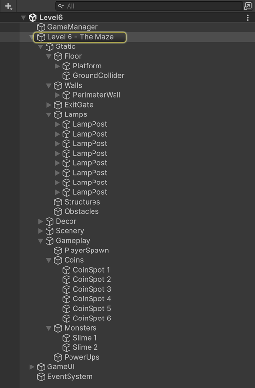
Obstacles, Structures and PowerUps are empty. Both Slimes and the 6 CoinSpots stay. PerimeterWall, the floor and Decor are the same as in Level1.5Lamps
Six lamps stay where they are. Lamp 5 (middle west) would stand inside the row B wall, and lamp 6 (middle east) would stand in the east gap of row B and block the way. Move them:
| Lamp | Old position | New position |
|---|---|---|
| 5 | -14.4, 0, 0 | -10, 0, 12 |
| 6 | 14.4, 0, 0 | 10, 0, 12 |
Now two lamps light the last area in front of the gate.
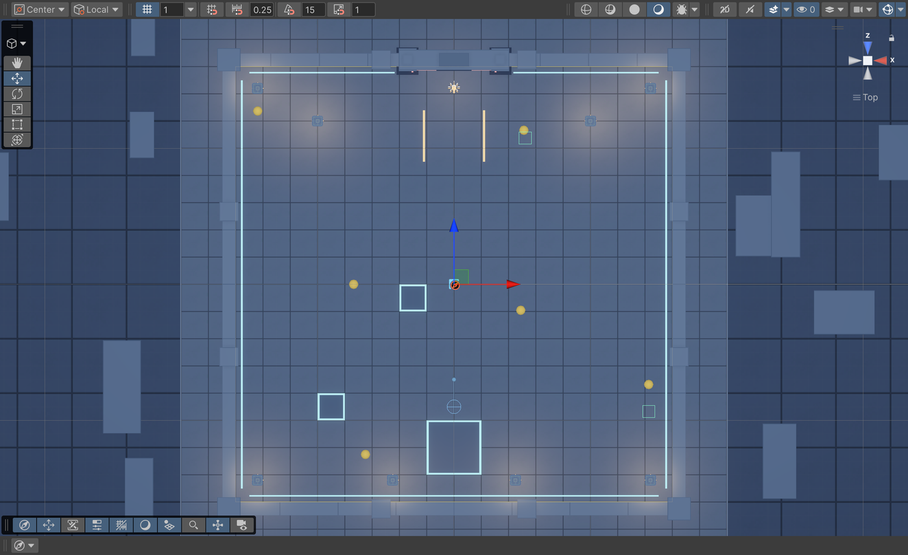
6Build the maze
- Right-click
Static→ Create Empty. Name itMaze. Position0, 0, 0. (It must be underStatic, so the NavMesh and the monsters' eyes see the walls.) - Build the three rows first (rows A, B, C), then the two splitters, then the blocks.
A wall with Rot Y 0 runs east–west (along X). With Rot Y 90 it runs north–south (along Z). A Wall_8m at X -8 goes from X -12 to -4.
Drag each prefab onto its parent in the Hierarchy and type the values. Scale stays 1, 1, 1.
| # | Prefab | Parent | Position | Rot Y | Note |
|---|---|---|---|---|---|
| 1 | Wall_8m | Static/Maze | -8, 0, -8 | 0 | Row A (gap in the west) |
| 2 | Wall_8m | Static/Maze | 0, 0, -8 | 0 | Row A |
| 3 | Wall_8m | Static/Maze | 8, 0, -8 | 0 | Row A |
| 4 | Wall_4m | Static/Maze | 14, 0, -8 | 0 | Row A, touches the east wall |
| 5 | Wall_4m | Static/Maze | -14, 0, 0 | 0 | Row B (gap in the east), touches the west wall |
| 6 | Wall_8m | Static/Maze | -8, 0, 0 | 0 | Row B |
| 7 | Wall_8m | Static/Maze | 0, 0, 0 | 0 | Row B |
| 8 | Wall_8m | Static/Maze | 8, 0, 0 | 0 | Row B |
| 9 | Wall_8m | Static/Maze | -12, 0, 8 | 0 | Row C (gap at X -8 … -4) |
| 10 | Wall_8m | Static/Maze | 0, 0, 8 | 0 | Row C |
| 11 | Wall_8m | Static/Maze | 8, 0, 8 | 0 | Row C |
| 12 | Wall_4m | Static/Maze | 14, 0, 8 | 0 | Row C |
| 13 | Wall_4m | Static/Maze | 0, 0, -5.5 | 90 | Splitter: leaves a 3 m passage |
| 14 | Wall_4m | Static/Maze | 6, 0, 2.5 | 90 | Splitter: leaves a 3 m passage |
| 15 | Block_2x2x2 | Static/Obstacles | -4, 0, -10 | 0 | Tall cover near the start (not in front of coin 1) |
| 16 | Block_2x2x2 | Static/Obstacles | 6, 0, -12 | 0 | Tall cover on the way to coin 2 |
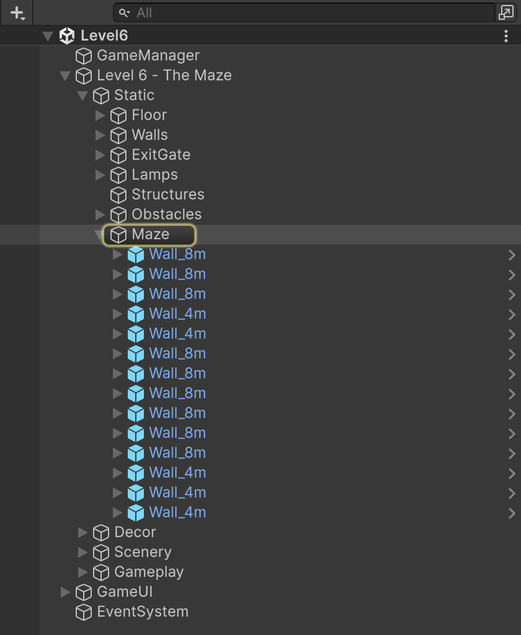
Static/Maze with its 14 wall pieces (the 2 blocks are in Obstacles).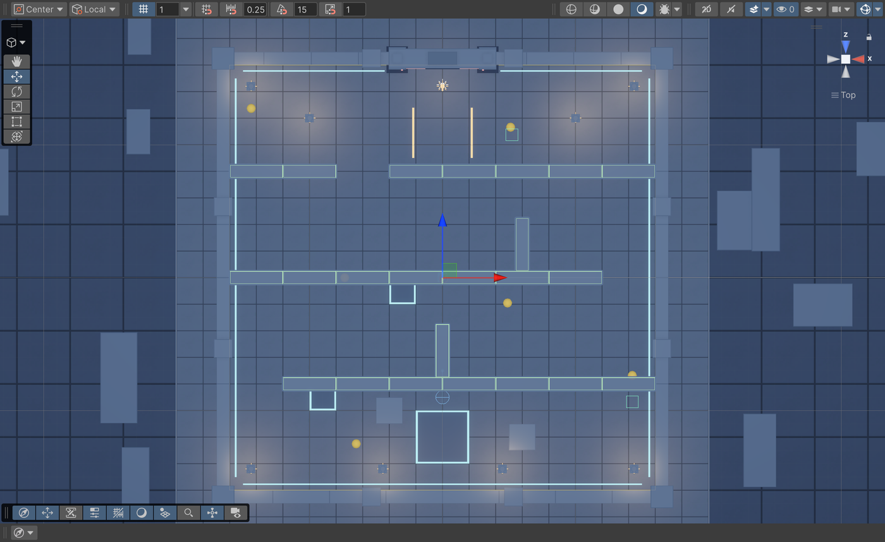
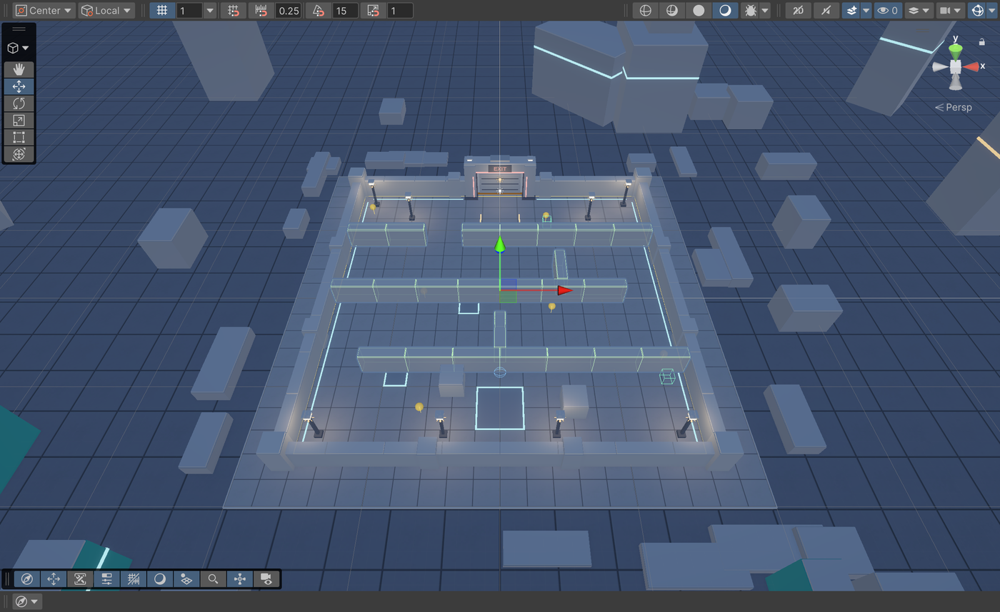
7Coins
You need 8 CoinSpots. A CoinSpot is an empty marker: the game makes the coin 1 m above it.
- Open
Gameplay/Coins. Keep the CoinSpots you have and move them to the new positions. - Need more? Select a CoinSpot and press Ctrl+D / Cmd+D (or drag
Prefabs/Markers/CoinSpotontoGameplay/Coins). Rename it with the next number. - Delete CoinSpots you do not need.
| Marker | Position | Why here |
|---|---|---|
CoinSpot 1 | -8, 0, -12 | On the way: pulls you west |
CoinSpot 2 | 12, 0, -12 | Dead end east: reward for exploring |
CoinSpot 3 | -14, 0, -4 | Just after the first gap |
CoinSpot 4 | 8, 0, -4 | Behind the first splitter, next to Slime 1: risk! |
CoinSpot 5 | 14, 0, 4 | Just after the second gap |
CoinSpot 6 | -13, 0, 4 | Dead end west, next to Slime 2: risk! |
CoinSpot 7 | -2, 0, 4 | In the third corridor |
CoinSpot 8 | 12, 0, 12 | Last coin, top right: then run to the gate |
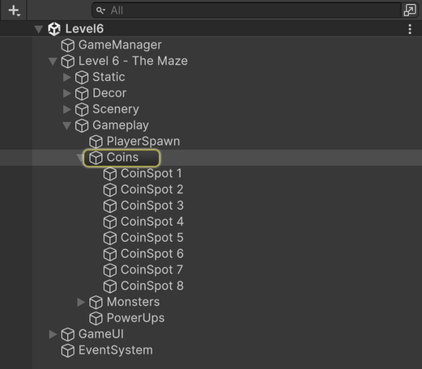
Gameplay/Coins. They are empty markers: the game makes the coins when you press Play.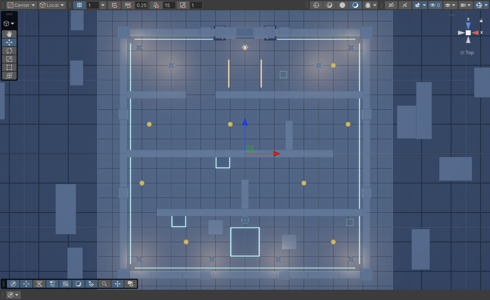
8Monsters
Move Slime 1 and Slime 2 from Level1 to the new places. Add one Monster_Ghost. The first corridor (the start) has no monster: Slimes wander all the time, also during the intro, and a Slime in the start corridor finds you before you can move (we tested it: caught after 2 seconds).
Monsters go into Gameplay/Monsters. To add one, drag a marker from Prefabs/Markers (Monster_Slime, Monster_Ghost or Monster_MushroomKing) onto the group, type the position, and rename it.
| Name | Marker | Position | Note |
|---|---|---|---|
Slime 1 | Monster_Slime | 10, 0, -4 | In the second corridor, behind the splitter. Guards coin 4. Use the SPEED power-up to run past it. |
Slime 2 | Monster_Slime | -10, 0, 4 | In the third corridor. Guards coin 6 and the gap in row C. |
Ghost 1 | Monster_Ghost (new) | 4, 0, 12 | Near the gate. It sees all around (12 m), so use the row C wall as cover. |
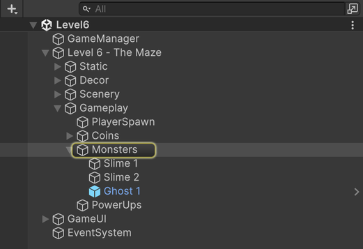
Gameplay/Monsters: Slime 1, Slime 2 and Ghost 1.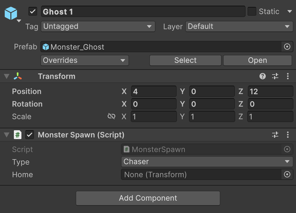
Ghost 1 (from the Monster_Ghost marker) at 4, 0, 12: Monster Spawn, Type = Chaser.9Power-up
A power-up is a PowerUpSpot marker, like PowerUp Magnet in Level1 (Phase 8). The game makes the orb above it at Play.
- Drag
Prefabs/Markers/PowerUp_SpeedontoGameplay/PowerUps. - Rename it
PowerUp Speed. Position-14, 0, -12. - Check its Power Up Spot: Type = Speed.
The SPEED orb sits right before the first long corridor. 6 seconds of speed is just enough to run past Slime 1 in the second corridor.
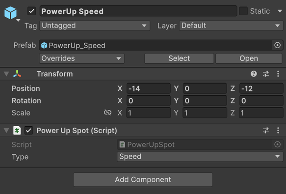
PowerUp Speed at -14, 0, -12 with Power Up Spot, Type = Speed.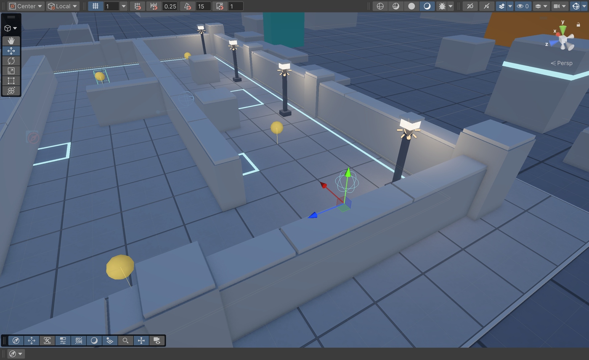
PowerUp Speed marker (the small wire ball) at the west end of the first corridor, just before the gap in row A. The SPEED orb appears there when you press Play.10Start, gate and NavMesh
- Select
Gameplay/PlayerSpawn. Position0, 0, -13, Rotation0, -90, 0(looks west, down the first corridor to coin 1 and the SPEED orb). - Select
Static/ExitGate. Position0, 0, 16, Rotation0, 0, 0. - Select
Static/Walls/PerimeterWall/GateBlocker. It stays at0, 2.5, 17.25(Box Collider7.5, 5, 1). Do not change it. - Select
Static. In NavMesh Surface, click Bake. Look at the blue area: it must reach every coin and the gate. - Save.
The start moves 4 m back (Z -13), to the bottom of the first corridor, and turns west: looking north, the player would only see the row A wall 5 m in front. The gate and the blocker stay where they are in Level1.
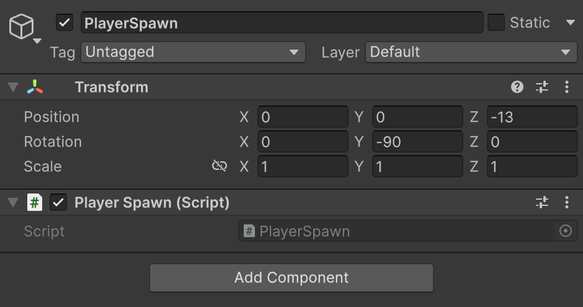
PlayerSpawn: Position 0, 0, -13, Rotation Y -90.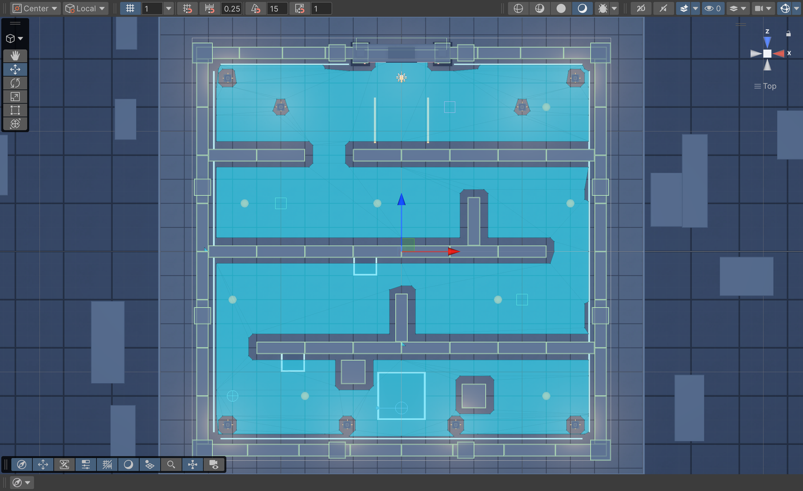
11LevelDef and Build Profiles
- Open
Assets/GoldRush/Scripts/Core/Data.cs. FindLevels.All. - Add this line at the end of the list (after the last level you have):
new LevelDef { title = "The Maze", subtitle = "Find the way out", seed = 606, scene = "Level6", size = 32, coins = 8, patrollers = 2, chasers = 1, powerUps = 1, enemySpeed = 1f, parTime = 60 },- Save the file. Wait for Unity to compile. No red errors.
- File → Build Profiles → Scene List: drag in
Scenes/Level6, underLevel5. Check it is ticked.
Not sure? Read Practicals, step 6 and 7.
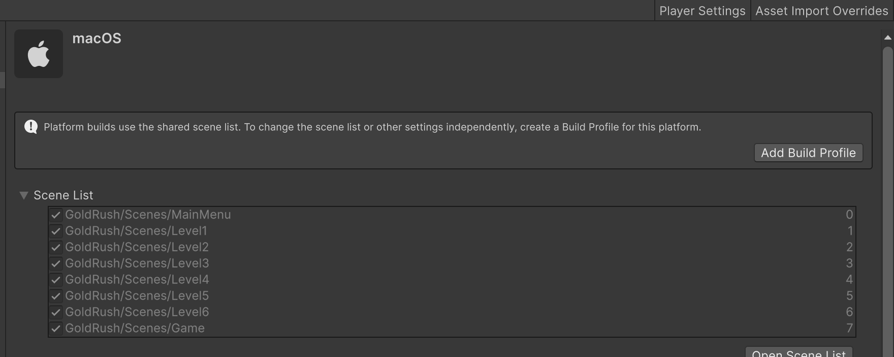
Level5 and Level6 in the Scene List, both ticked.12▶ Play test
- Open
Level6and press ▶ Play. - Play the level to the end. Then play it 2 more times and write down your times.
- Open
MainMenu→ Play → LEVELS. Find the THE MAZE card.
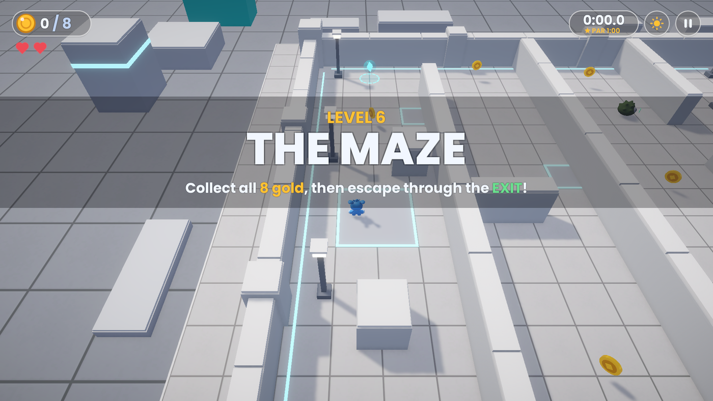
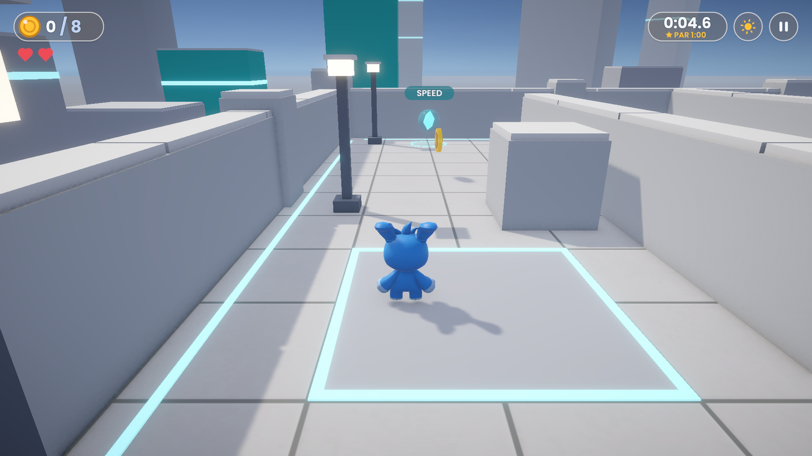
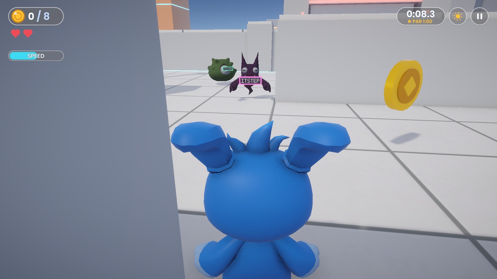
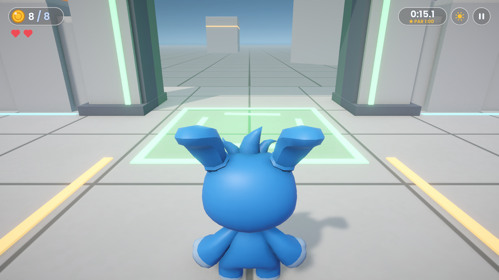
▶ Play test: check these
- From the start you see coin 1 and the SPEED orb, not a monster.
- Every corridor and both splitter passages let you through without touching walls.
- No monster comes into the first corridor while you collect coin 1 and the SPEED orb.
- The Ghost starts behind row C, near the gate. It wanders, so it can come into the middle corridor too: look out for it.
- Your best time is under the par time (60 s).
- The intro says THE MAZE and "Collect all 8 gold".
- The gate opens after the last coin, and you win when you run through it.
- No red errors in the Console.
The card: it is card 6, the first one in the second row. While it is locked, it shows THE MAZE, a lock and "Clear level 5". You unlock it when you win Level 5. Then it shows "Find the way out" and "8 GOLD TO FIND" (see Practicals, step 8).
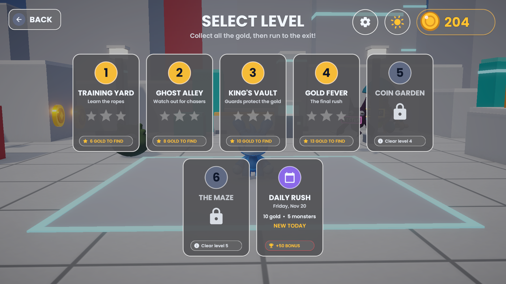
Tune the par time: best time + 25 %, rounded to 5 s. Change parTime in Data.cs.
13Make it harder
- Change Slime 2 into a Ghost: set its Monster Spawn → Type to
Chaser(and updatepatrollers/chasers). - Put a third
Monster_Slimemarker at13, 0, -12, next to coin 2 in the first corridor. Does it find you at the start? Then move it. - Move the SPEED power-up to the dead end of coin 6 (risk for reward).
- Set
enemySpeed = 1.1fandparTime = 50. - Add a second gap in row B at the west end (delete the
Wall_4mat-14, 0, 0): two ways to go, which is faster?
14Self-check
Be honest. Better: let a friend play and fill it in for you.
| Check | 1 point: OK | 2 points: good | 3 points: great |
|---|---|---|---|
| Works | The level loads from the menu card. The gate opens after the last coin. | All coins can be reached. No red errors in the Console. All 16 maze pieces touch. The NavMesh has no holes in the corridors. | The par time and the coin number in Data.cs match the level. |
| Fun | There is something to do on the way to every coin. | You must think about the way, and the dead ends are worth it. | You want to play it again to beat the par time. |
| Fair | No monster can see you at the start. | Every corridor is 3 m wide or more. The Ghost does not see the start. | A friend can win it on the 2nd or 3rd try, without your help. |
| Looks good | Nothing floats or sinks into the floor. | The rows are straight. The lamps light the area at the gate. | The level has a clear theme. Lamps and colours point the way. |
Give yourself 1–3 points per row. 8 points or more: well done. Less? Fix the lowest row first, then test again.